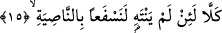

15. Hayır, hayır! Eğer vazgeçmezse, derhal onu alnından (perçeminden),
“Hayır, hayır” Bu ifâdeler, o mel’un yasaklayıcı kişiyi Allah’a ibâdeti yasak ettiği,
Lat’a tapmayı emrettiği için kendisini kovma ve azarlama ifâdesidir.
“Eğer vazgeçmezse...” Âyetin başında yer alan “lam” yemin lâmıdır. Buna göre
âyetin mânâsı; Allah’a yemin ederim ki bu kişi bulunduğu durumdan ve hareketinden
vazgeçmez, buna bir son vermez, tevbe etmez ve ölmeden önce elini bu gibi işlerden
çekmezse... “derhal onu perçeminden” yakalarız. Okuduğumuz âyetteki “le nesfean”
fiili tıpkı, “le yekunen minessağirin” (Yusuf, 32/12) âyet-i kerimesinde olduğu gibi
aslında nun harfiyle yazılır. Fakat mushafta burada vâkıf olduğu için elif şeklinde
yazılmıştır. Çünkü bu “nun” harfinde durulur ve durulurken tenvine benzetilerek elif
üzerinde durulur.
Âyette yer alan “sef’” herhangi bir şeyi kabzetmek ve onu şiddetle sert bir biçimde
çekmek demektir. Aynı âyette yer alan “nasiye” başın ön tarafındaki saçların adıdır.
Bütün bu açıklamaların ardından âyet-i kerimeye mânâ verecek olursak şöyle deriz: Biz
âhirette onu alnının perçeminden yakalarız ve bu perçemi ile birlikte onu Cehenneme
atarız. Doğal olarak o kişinin perçeminden yakalanması demek, Biz onu perçeminden
yakalayıp tahkir ederek ve zelil bir biçime sokarak Cehenneme götürmeleri için
zebanilere emrederiz de onlar bunu perçeminden yakalarlar demektir. Araplar “cerrun
nasiye/perçeminden sürükleme” ifâdesine alışkındılar.
Aynu’l-maânî’de ifâde olunduğuna göre; “Ahzun binnasiye/perçeminden yakalamak”
bir kimseyi kahır ile ona değer vermeksizin zelil bir biçimde aşağılıyarak yakalamak
demektir. Âyette izâfet yapmayarak, sâdece ahd lam’ı ile yetinilmiş olması ve sâdece
“perçem” denmesi, bu perçemden maksadın yukarda zikredilen ve kulu namazdan
alakoyan kimsenin perçemi olması konusunda ifâdenin gâyet açık bulunmasından
dolayıdır.
Bu âyette sözü edilen “perçeminden yakalama” ifâdesinden maksad dünyada iken
Bedir savaşında yüzüstü sürüklenmesi ve çekilmesi şeklinde olması da mümkündür.
Eğer mânâ buysa o zaman bu âyet -Ebû Cehil namaz kılmayı tekrar men edecek olursa-
ilerde müslümanların onu nasiyesinden tutma fırsatını ve yüzüstü yerde sürüme imkanını
elde edeceklerine dâir bir müjde olmuş olur. Gerçekten Ebû Cehil bu davranışını tekrar
yapınca Allah Teâlâ Bedir savaşı günü müslümanlara onu yüzünden sürüme imkanını
vermiştir.
Rivâyete göre Rahman sûresi nâzil olunca Peygamber Efendimiz (s.a.); “Bu sûreyi
Kureyş’in ileri gelenlerine karşı kim okur?” diye sorar. Orada bulunanlar bu emir
karşısında ağır davranırlar, aralarından İbn Mes’ud (r.a.) ayağa kalkar ve; “Ben ya